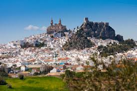

Descubre andalucía
Monumentos

Andalucía, tierra de historia y cultura, alberga una gran cantidad de monumentos impresionantes. Desde la majestuosa Alhambra de Granada hasta la imponente Catedral de Sevilla, cada rincón de esta región está impregnado de legado histórico. La Mezquita-Catedral de Córdoba, la Alcazaba de Málaga y la Giralda de Sevilla son solo algunos ejemplos de la rica arquitectura que espera a ser explorada en Andalucía.
Pueblos
Los pueblos blancos de Andalucía son verdaderas joyas escondidas entre las colinas y valles de la región. Con sus calles estrechas, casas encaladas y flores coloridas, lugares como Ronda, Grazalema y Frigiliana te transportan a otra época. Además, pueblos costeros como Nerja y Conil ofrecen la combinación perfecta de encanto tradicional y belleza natural.
Paisajes
Los paisajes de Andalucía son tan variados como impresionantes. Desde las extensas playas de la Costa del Sol hasta las montañas escarpadas de Sierra Nevada, pasando por los vastos campos de olivos y viñedos, esta región ofrece una diversidad de escenarios incomparable. El Parque Nacional de Doñana, las Sierras de Cazorla y las Alpujarras son solo algunos ejemplos de la belleza natural que espera ser admirada en Andalucía.